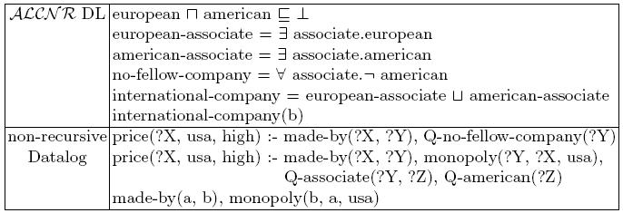
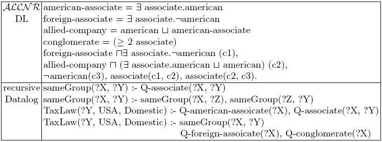

An Example From (non-recursive) CARIN for query to price(a, usa, high)

the Rule component (in POSL)
price(?X, usa, high) :- made_by(?X, ?Y),
Q_no_fellow_company(?Y).
price(?X, usa, high) :- made_by(?X, ?Y),
monopoly(?Y, ?X, usa),
Q_associate(?Y, ?Z),
Q_american(?Z).
made_by(a, b).
monopoly(b, a, usa).
the DL component (in RACER)
(in-knowledge-base carin-t carin-a)
(in-tbox carin-t)
(signature :atomic-concepts (european
american
european_associate
american_associate
no_fellow_company
international_company)
:roles ((associate))
:individuals (a b))
(implies (and european american) *bottom*)
(equivalent european_associate (some associate european))
(equivalent american_associate (some associate american))
(equivalent no_fellow_company (all associate (not american)))
(equivalent international_company (or european_associate american_associate))
(in-abox carin-a)
(instance b international_company)
(instance a *top*)
An Example From (recursive) CARIN for query to TaxLaw(c3, USA, Domestic)

*** rewriting the recursive Datalog rules with DL axioms ***
the Rule component (in POSL)
TaxLaw(?Y, USA, Domestic) :- Q_foreign_associate(?X),
Q_conglomerate(?X),
Q_sameGroup(?X, ?Y).
TaxLaw(?Y, USA, Domestic) :- Q_american_associate(?X),
Q_associate(?X, ?Y).
the DL component (in RACER)
(signature :atomic-concepts (american
american_associate
foreign_associate
allied_company
conglomerate)
:roles ((associate :parent sameGroup)
(sameGroup :transitive t))
:individuals (c1 c2 c3))
(equivalent american_associate (some associate american))
(equivalent foreign_associate (some associate (not american)))
(equivalent allied_company (or american american_associate))
(equivalent conglomerate (at-least 2 associate))
(in-abox carinAdd-a)
(instance c1 (and foreign_associate (some associate (not american))))
(instance c2 (and allied_company (or american (some associate american))))
(instance c3 (not american))
(related c1 c2 associate)
(related c2 c3 associate)
|
{kind=link}